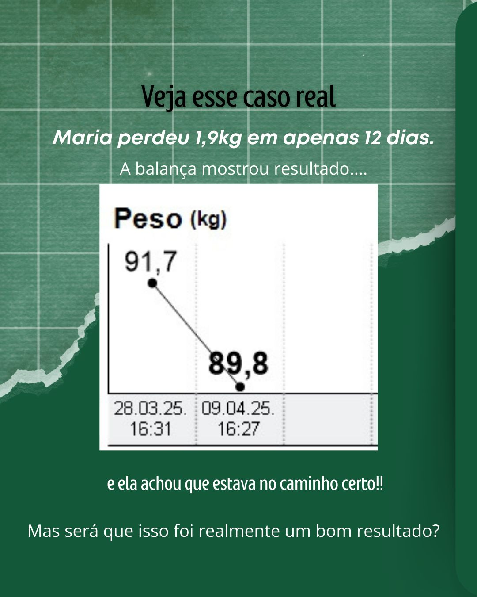
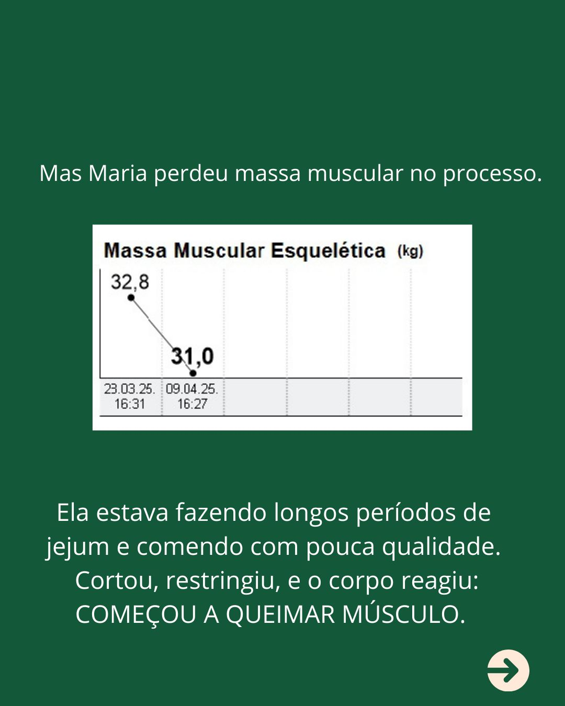

Emagrecimento sustent�vel, controle de doen�as cr�nicas e equil�brio metab�lico. Uma abordagem individualizada que respeita a sua rotina, autonomia e qualidade de vida.
CRN11 19551 • Atendimento VIP
Planejamentos fundamentados em evid�ncias cient�ficas de ponta, avaliando exames laboratoriais, perfil lip�dico, glic�mico e hormonal para proteger sua sa�de integral.
Especializa��o AMBULIM/USP para ressignificar sua rela��o com o alimento e com o corpo. Emagrecimento real sem a pris�o de restri��es severas ou culpa social.
O melhor plano � aquele que voc� consegue executar. Adequa��o milim�trica aos seus hor�rios de trabalho, viagens, prefer�ncias culin�rias e metas est�ticas.
Atendimento particular presencial na Cl�nica MENTA ou em plataforma de telemedicina de alta resolu��o.
Redu��o de percentual de gordura corporal preservando a massa magra, com suporte metab�lico baseado no protocolo Albert Einstein.
Controle e revers�o de par�metros em Diabetes Mellitus, Hipertens�o Arterial, Dislipidemias (colesterol/triglicer�deos) e Esteatose Hep�tica.
Abordagem especializada para epis�dios de compuls�o alimentar, fome emocional, efeito sanfona e supera��o de ansiedade ligada � balan�a.
Estrat�gias para ganho de massa muscular, timing de nutrientes pr� e p�s treino, avalia��o corporal segmentada e disposi��o energ�tica.
Diagn�stico Metab�lico Segmentado

Estrutura Completa de Atendimento

Acompanhamento e Mentoria Nutricional
A pr�tica cl�nica do Lucas Aguiar � alicer�ada em t�tulos acad�micos de alto rigor, unindo pesquisa cient�fica universit�ria com a pr�tica hospitalar de refer�ncia.
Conselho Regional de Nutricionistas
Pesquisa aprofundada em sa�de populacional, h�bitos e pol�ticas alimentares.
Especializa��o avan�ada em Obesidade, Emagrecimento e Doen�as Metab�licas.
Aprimoramento em Transtornos Alimentares no Hospital das Cl�nicas da USP.
Forma��o pioneira no Instituto de Nutri��o Comportamental de S�o Paulo.
Avalia��es p�blicas extra�das diretamente da plataforma Doctoralia.
"Excelente consulta. Bastante atencioso. Muito preocupado em melhorar a dieta alimentar, a sa�de e a qualidade de vida do paciente. E n�o s� passar uma dieta restritiva para emagrecimento. Adequa a dieta � realidade e � rotina! Excelente nutricionista."
"O Lucas � fera, muito profissional e deixa o paciente bem � vontade. Muito t�cnico e 'p� no ch�o', sem criar metas imposs�veis. A consulta � detalhada e voc� sai com total clareza do que fazer."
"Amei as explica��es, a aten��o, o modo de tratar, a simpatia e o tempo dedicado na consulta. Ele escuta bastante o paciente e procura alternativas que se encaixam no estilo de vida. Indico demais!"
Selecione as op��es abaixo para receber uma orienta��o inicial personalizada via WhatsApp diretamente com o Lucas.